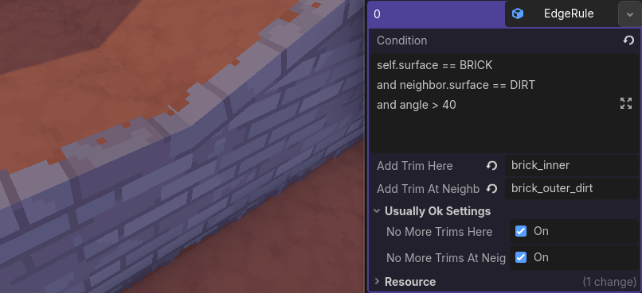
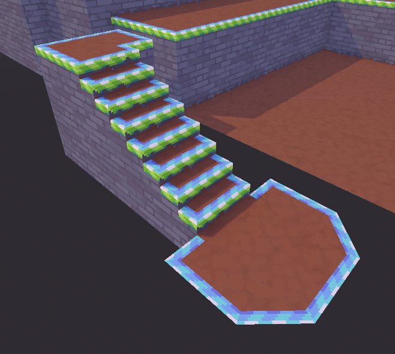
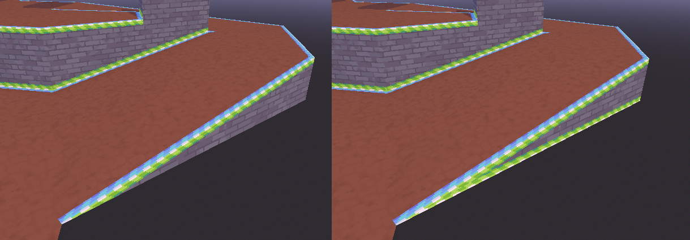
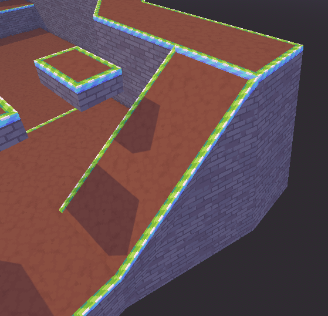
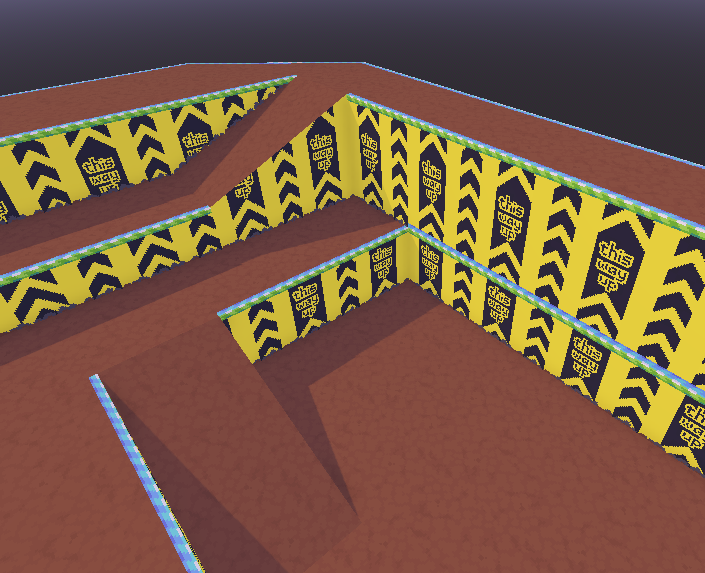

Edge rules
Edge rules determine where trims are added onto a 3D model. Without edge rules, your model will not get any trims added onto it.
An edge rule specifies when trims get added and which trims get added. The complicated part of this is specifying when trims get added, the “condition”. The condition consists of a bit of code that says exactly when trims should get added.
Despite needing some code, you generally don't need to be a computer whiz to create edge rules. You can just paste in some code from the recipes and adjust the surface names to your situation, and that should be good enough for a lot of situations.
An in-depth understanding of the code for edge rule conditions is not necessary. They're pretty short, and you can make do with a shallow understanding.
An edge rule is evaluated once for every edge of every face. Edge rules are evaluated in-order, with the ones appearing first on the list being evaluated first.

General settings
Condition
Code that determines when the trims should be added to an edge.
This snippet of code determines when the trims should be added. It's too much to explain here, so there's a whole section for it. Take a look at the condition section.
Add trim here (optional)
Which trim to add to the first side of the edge.
This determines which trim gets added to the current face if the condition passes (the “self” face in the condition).
Trim names are sensitive to capitals and spaces. For example, if your trim is called “brick_trim” and you fill in “Brick_trim” instead, you'll get an error, because of the mismatch in the capital letter B.
Add trim at neighbor (optional)
Which trim to add to the second side of the edge.
This determines which trim gets added to the neighboring face if the condition passes (the “neighbor” face in the condition). If the current face does not have a neighbor, this is ignored.
Trim names are sensitive to capitals and spaces. For example, if your trim is called “brick_trim” and you fill in “Brick_trim” instead, you'll get an error, because of the mismatch in the capital letter B.
No more trims here
Whether anymore trims should be added to the first side of the edge.
When the condition passes and this setting is enabled,
no more edge rules will be evaluated for this edge from the current face.
By that I mean: For the edge that passed the condition,
the current face will never appear as self anymore.
It can still appear as neighbor unless
“no more trims at neighbor” is also checked.
Because edge rules are evaluated in-order, this option only affects edge rules that come after the current edge rule in the list.
Unless you're specifically in a situation where you want to have multiple trims that attach to this edge, you should leave this enabled.
No more trims at neighbor
Whether anymore trims should be added to the second side of the edge.
This is mostly the same as “no more trims here”,
except that it prevents the neighboring face from appearing as self
(instead of the current face).
If this is enabled and “no more trims here” is disabled,
the neighboring face can still appear as neighbor, but never as self.
If an edge rule can apply to both a face and its neighbor, then I really can't tell you which of the two faces will have the edge rule evaluated first and which one would be blocked by “no more trims at neighbor”. It depends on the 3D model and in what order the model's internal data is stored. In practice that means it's basically random.
Condition code
An edge rule uses a snippet of code to check when its trims should be applied.
For its conditions, AutoTrimmer uses a tiny scripting language that resembles Python and GDScript. It only supports expressions (the kind of code that you can put in an if-statement) — you can't create new variables or functions.
Below is an example. The self trim is green and the neighbor trim is blue.
Notice how only the sort-of-sharp edges are given a trim by this edge rule.
That's because concave corners (like the corners at the bottom of the walls)
have a negative angle in AutoTrimmer.
This rule only applies to edges with an angle greater
than 40° — which excludes all negative angles.
self.surface == BRICK # The current face is brick...
and neighbor.surface != BRICK # And the neighboring face is not brick...
and angle > 40 # And the angle between the two faces is greater than 40 degrees

Approximately equals
Although the scripting language strongly resembles Python & GDScript,
there is one feature that those languages don't have:
AutoTrimmer has the operator ~=, which means “approximately equals”.
This operator is useful because software like Blender is not completely exact,
so checking whether two coordinates or two directions are exactly equal will
often not work the way you would like it to.
The ~= operator is True if its two operands are almost exactly the same.
The amount of error that it tolerates is really very small.
It's a substitute for the == operator for situations where the operands can
be very slightly wrong, due to precision problems.
There's also the “not approximately equal” operator !~=.
It gives the opposite of what ~= would give.
Surface constants
In code, each surface is referred to by a constant number. That constant number is given a name that you can use to refer to the surface in code. For example, here's a rule that finds all edges between a brick surface and a dirt surface:
self.surface == BRICK and neighbor.surface == DIRT

In code, the name of the surface is the same as its normal name, but in UPPER_SNAKE_CASE. If you keep the capitalization of your surface names somewhat normal, the upper snake case name will probably match your intuition.
Here's some examples of how names are turned into upper snake case:
| Surface name | UPPER_SNAKE_CASE_NAME |
|---|---|
| brick | BRICK |
| Brick | BRICK |
| BRICK | BRICK |
| grey brick | GREY_BRICK |
| GreyBrick | GREY_BRICK |
| grey_brick | GREY_BRICK |
| Grey_Brick | GREY_BRICK |
| GREY_BRICK | GREY_BRICK |
| greybrick | GREYBRICK |
| dvd player grey | DVD_PLAYER_GREY |
| DVD_PLAYER_GREY | DVD_PLAYER_GREY |
However! If you use mix different types of capitalization it doesn't work so well:
| Surface name | UPPER_SNAKE_CASE_NAME |
|---|---|
| DVD player grey | D_V_D_PLAYER_GREY |
| DVDPlayerGrey | D_V_D_PLAYER_GREY |
| DVDplayergrey | D_V_DPLAYERGREY |
| grey_BRICK | GREY_B_R_I_C_K |
| GREy_BRICK | G_R_EY_B_R_I_C_K |
| GrEyBrIcK | GR_EY_BR_IC_K |
Try to stick to one type of capitalization (and don't capitalize it in a weird way).
Overview of variables
This is the list of variables that you can directly use in an edge rule.
The variables self and neighbor have useful properties inside, which are
documented in the Face section.
| Name | Type | Short description |
|---|---|---|
| self | Face | The current face. |
| neighbor | Face? | The neighboring face, if it exists. |
| angle | number? | The angle between the current face and its neighbor, if there is a neighbor. |
| has_neighbor | boolean | True when self has a neighboring face. |
self
The global variable self gives you the current Face.
neighbor
The global variable neighbor gives you the neighboring Face.
If there is no neighbor, but neighbor is necessary to compute
your condition, then that counts as the condition not passing.
Examples
This condition will pass for the edges that are between a brick face and a
dirt face. This condition will not pass for faces with no neighbor, because
neighbor is necessary to compute the rule.
self.surface == BRICK and neighbor.surface == DIRT
This condition will pass for the edges that are inbetween a brick face and any
face that isn't brick. This condition will not pass for faces with no
neighbor, because neighbor is necessary to compute the rule.
self.surface == BRICK and neighbor.surface != BRICK
This condition will pass for the edges where there either is no neighbor, or where the neighboring face isn't a brick surface.
self.surface == BRICK and (not has_neighbor or neighbor.surface != BRICK)
It's a little complicated, but here's why this works when there's no neighbor, even though it uses the variable "neighbor":
In the expression "A or B", the part "B" is not looked at when "A" is True. It isn't necessary to look at "B", because "True or ???" is always going to be "True" in the end. After all, the result of "True or True" is "True", and the result of "True or False" is also "True".
This edge rule still works if there is no neighbor, because the part that uses "neighbor" is only looked at if there is a neighbor. The rule first checks if a neighbor exists before using the variable "neighbor".
Something similar applies to "A and B": An expression like "False and ???" is always going to give the result "False", so in the case of "A and B", it won't look at "B" if "A" is "False".
The example on the right is using the code from this last example. Notice how the bottom edge of the slope also gets decorated, even though the face does not have a neighbor there.

angle
The global variable angle gives you the angle between self and neighbor
in degrees. The variable angle is always between -180° and 180°
| Angle | Short description |
|---|---|
| 0 | self and neighbor are completely flat. They face the exact same direction. |
| 90 | This is a convex right angle, like an edge of a cube. It's kind of pointy. |
| -90 | This is a concave right angle, like a corner of a room. It's the kind of corner where dust builds up if you don't clean your stuff properly. |
Because 3D editing software is not perfectly exact,
you should not use exact equality.
You should be pretty approximate when checking angles.
For example instead of angle == 45 (to see if the angle is 45°),
you might want to use 40 < angle and angle < 50, which adds 5° of leeway in
both directions.
If there is no neighbor and angle is necessary to compute
your condition, then the edge rule fails.
Please note that this happens only if angle is
necessary in the calculation.
This is discussed in more detail in the last example of
Examples:
This edge rule will only succeed for faces that…
- … have a neighbor (implicit, because it uses "angle"), and…
- … have an angle to their neighbor that is greater than 30 degrees.
self.surface == DIRT and angle > 30
Notice how this rule adds a trim at the top of the ramp, but not at the bottom of the ramp: This is because the angle at the top of the ramp is 35°, and the angle at the bottom of the ramp is -35° (note the minus!)

In the next code snippet, the second line of code is True if either…
- … this face has no neighbor, or…
- … the angle is not very steep (between 40 and -40 degrees).
self.surface == BRICK
and (not has_neighbor or (-40 < angle and angle < 40))
Notice how only the flat edges get a trim added between them, and the sides of the diagonal brick wall do not get trims. For this example it's important to understand that Godot turns all faces into triangles before they get to AutoTrimmer. That's why all of the faces are triangles.

Overview of global functions
These functions are available for use in edge rules.
Author's note: Only abs(number) has been useful to me so far.
The rest of these functions haven't been useful at all,
but they're there if you need them.
| Function | Result | Short description |
|---|---|---|
| abs(number) | number | In mathematics, the absolute turns negative numbers into positive numbers. Positive numbers stay the same. |
| abs(vector) | vector | This applies abs(number) to each element of the vector. |
| normalize(vector) | vector | In mathematics, normalizing a vector changes its length to 1. As a special case, if you pass in a zero vector, you get a zero vector out. |
| vec2(number, number) | Vector2 | Creates a new Vector2. |
| vec3(number, number, number) | Vector3 | Creates a new Vector3. |
| sin(number) | number | Computes the sine. |
| cos(number) | number | Computes the cosine. |
| tan(number) | number | Computes the tangent. |
| asin(number) | number | Essentially the opposite of sin. |
| acos(number) | number | Essentially the opposite of cos. |
| atan(number) | number | Essentially the opposite of tan. |
Overview of Face
The type Face gives you information about one of the faces next to the current edge.
| Name | Type | Short description |
|---|---|---|
| surface | number | Which surface the face belongs to. Useful for comparing against surface constants. |
| dir | Vector3 | The direction of the face. |
| uv_dir | Vector2 | The direction of the texture. |
surface
Each surface is associated with a constant number.
The surface property of a Face gives you the surface number of that
face.
It's very useful for comparing against surface constants.
Most likely all of your edge rules will make use of this property.
Examples
self.surface == DIRT

dir
The face property dir gives the direction of the face.
Specifically, it's the direction that's perpendicular to the current edge
and which points inwards, towards this face.
The direction dir is in the 3D model's local space (not world space — it ignores the rotation of the 3D model instance).
Examples
self.dir.y > 0.8
Notice how the green trims all have a perpendicular that points mostly upwards.

uv_dir
This gives you the direction of the texture. It's like dir, but in texture space instead of world space.
Basically, you can use this to check whether an edge is aligned with the texture. I use this in the roof trick to differentiate between top ridges and side ridges.
Here's a more precise explanation:
The property uv_dir is the direction in texture space
that's perpendicular to the current edge (in texture space)
and which points inwards, towards this face (in texture space).
UVs explained: To draw textures onto your 3D model, the computer needs to know which parts of the texture go where. This is determined by UV coordinates. Each corner of a face is given a coordinate on the texture, and the computer will then fill in the face with the part of the texture that's between those coordinates.
It's very important to know that in Godot, the y-axis goes downwards in texture space instead of upwards. That means that positive values of y are downwards, and negative values of y are upwards.
Examples
self.surface == BRICK and self.uv_dir.y ~= 1
This example uses the approximately equals operator
~=.
For this example I replaced the brick texture with a test texture. Notice how all the green trims are pointing exactly downwards in texture space. 
Overview of Vector2 and Vector3
In mathematics, a vector is a couple of numbers slapped together into one "thing". Here's an example of a 3D vector: (1.1, 0, -2.2). Now, I realize that that's a pretty boring example, but that's what vectors look like. It's just a couple of numbers put together.
Vectors can be used for all sorts of purposes, but here are the three most common uses in geometry:
- A position. For example, if we have three numbers, we can use those numbers as a 3D coordinate. You've probably had Cartesian coordinates in school, so I won't go into detail about how that works, but in short: One of the three numbers is the distance right/left, another one is up/down, and the last one is backward & forward (the order of the numbers differs per game engine). Put those three coordinate numbers into a vector, and you have yourself a “position vector”.
- A difference in positions. Basically it's saying, if we are at point A, how many steps do we need to take to get to point B? In 3D, we measure the amount of steps in each of the three dimensions separately, and those three numbers make up your 3D difference vector.
- A direction. If we have a difference in positions, we can say that we don't really care about the length of that difference, only the direction of it. If we throw out the length (by changing the length to 1), what you get is called a “direction vector”.
I'm not going to go into detail about vectors and linear algebra here, because this is not exactly the right place to start writing a mathematics book. That said, while writing edge rules, we only really use direction vectors.
The direction vectors that you get from Face
always have a length of 1.
So, if you want to check if a direction goes upwards, you can use a tiny code
snippet like dir.y > 0.9, which will be True whenever the direction is
strongly upwards.
Since the total length of dir is always 1,
whenever the y-coordinate of dir is greater than 0.9,
the x and z-coordinate must be pretty small.
So a direction for which dir.y > 0.9 is definitely an
upwards direction.
You can replace "0.9" with a smaller number if you don't need the direction
to be so steeply upwards.
If, instead of checking if a direction just goes up, you want to see if it's
vertical (up or down), you can use dir.y > 0.9 or dir.y < -0.9.
It's a lot shorter if you use the
abs function (which turns negative numbers
into positive numbers): abs(dir.y) > 0.9.
| Name | Type | Short description |
|---|---|---|
| x | number | The x-coordinate. By Godot conventions, the x-axis goes to the right (or to the East) |
| y | number | The y-coordinate. By Godot conventions, the y-axis goes up in 3D and down in 2D. |
| z | number | The z-coordinate. Only for Vector3. By Godot conventions, the z-axis goes backward (or to the South) |
| length | number | The length of the vector. |
| dot(vector) | number | The dot product. If you don't know it, you won't need it. |
| cross(Vector3) | Vector3 | Only for Vector3. The cross product. If you don't know it, you won't need it. |
Also relevant is the global function “normalize(vector)”, which changes a vector's length to 1.
Here's an overview of the math expressions that are supported for vectors:
| Mathematical expression | Result | Short description |
|---|---|---|
| vector + vector | vector | Adds the elements of the vectors together, like this: (x1 + x2, y1 + y2, z1 + z2) |
| vector - vector | vector | Subtracts the elements of the vectors. If you do this with two position vectors, you get the difference in position. |
| vector * vector | vector | Multiplies the elements of the vectors. This is element-wise multiplication (I mention that because there's a bunch of different ways to multiply vectors). |
| vector / vector | vector | Divides the elements of the vectors. Element-wise division. |
| vector + number | vector | Adds the number to each element of the vector. |
| vector - number | vector | Subtracts the number from each element of the vector. |
| vector * number | vector | Multiplies each element of the vector by the number. |
| vector / number | vector | Divides each element of the vector by the number. |
The scripting language also supports vector swizzling. Vector swizzling lets you reorder the elements of vectors very conveniently, though if you haven't already heard of vector swizzling, you probably won't need it while using AutoTrimmer.